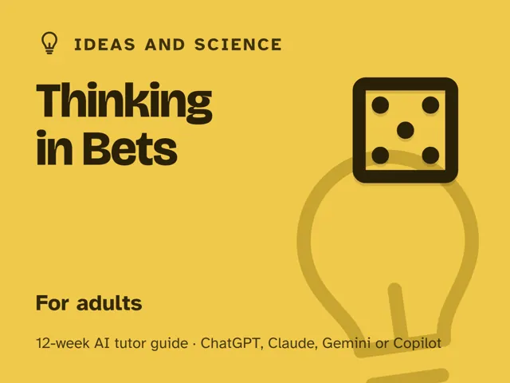

Thinking in Bets
$29Instant download: a PDF to read, a browser copy, and the AI-tutor file you hand straight to any AI assistant.Buy it on Etsy →
Take the free placement check first: 15 minutes, and it names the week to start at.
A masterclass you actually finish. You already know the decision-making advice (trust your gut, follow the data, sleep on it), and none of it tells you what to do with a real choice under real uncertainty. This 12-week digital guide builds the actual mental model: separating good decisions from good outcomes, thinking in probabilities instead of false certainty, weighing options by what's likely and what's at stake, and updating your beliefs honestly when new evidence shows up. Each week you lead one fully scripted ~60-minute session, with every step timed and written out for you, so no expertise or prep is required. An AI tutor works as your thinking partner: it never hands you the answer; it makes you name your confidence as a real number, imagine the plan failing before you commit, and grade the process instead of the result. Never used an AI chat assistant before? The guide's front matter walks you from zero to ready in about five minutes, free plan and all. Built for real calls at work, at home, with your health, and with people you care about. No gambling, no investing, no finance, just better thinking with the same incomplete information everyone has.
What you get
- 12 deep weekly sessions, each with a plain-language concept, a concrete worked example, a minute-by-minute ~60-minute session plan with the AI-tutor prompts built in, a "show me" checkpoint, common mistakes to watch for, and practice.
- A "Never used an AI chat assistant? Start here" onboarding that takes a complete beginner from zero to ready in about five minutes, using a free AI assistant; no paid plan needed.
- Four rescue prompts in the front matter for when a session goes sideways: one for when a decision has you stuck, one for when the AI starts telling you what to decide, a "level me up" prompt that adds real-world mess, and a check that you really understand the difference between a good decision and a good outcome.
- An orientation that sets the one rule that changes everything: separate whether you decided well from whether it turned out well, because they are different questions.
- A personal decision journal and checklist you build across the twelve weeks and can run on any future decision.
The 12 weeks
- Good Decisions vs. Good Outcomes
- Thinking in Probabilities, Not Certainties
- Expected Value in Everyday Terms
- Updating Your Beliefs on New Evidence
- Bias & Noise in Judgment
- The Outside View
- Pre-Mortems & Second-Order Effects
- Deciding Well as a Group
- Keeping Score: The Decision Journal
- Project Week I: Plan a Real Decision
- Project Week II: Decide, Act, and Set Up the Review
- Demo Day & the Calibrated Mind
Who it's for
Adults who want to make better decisions when they can never know everything: anyone facing real calls at work, at home, with their health, or with people they care about. No math, statistics, or finance background assumed.
Why this instead of a free chatbot
A raw chatbot will happily tell you what to decide, or worse, tell you afterward that you were right all along. This pack ships the structure and discipline it lacks: a real 12-week progression from separating decisions from outcomes to working a real decision the whole way through, and a tutor set up to make you name an honest probability, imagine failure first, and tell good process apart from good luck before you ever act. You leave able to reason clearly under uncertainty, not just ask a bot what to do.
FAQ
- Do I need any experience? None. Week 1 starts with two decisions from your own life; every week builds one piece of the toolkit from there.
- Never used an AI chat assistant before? No problem. The guide opens with a "Start here" section that walks complete beginners through setup in about five minutes. A free AI assistant is all you need, no paid plan required.
- Which AI does it use? Works with any modern AI assistant: ChatGPT, Claude, Copilot, or Gemini (free versions are enough). Every session is written out step by step; no special software.
- Is this about gambling or investing? No. "Thinking in bets" is a mental model for reasoning under uncertainty, not a betting system. Every week uses everyday-life, work, health, and relationship decisions; there is no gambling, investing, or financial content anywhere in the pack.
- Will this make me overthink every little decision? No. The tools are for choices big enough to deserve ten focused minutes, not what to eat for lunch. You'll actually spend less time agonizing over the small stuff once the big stuff has a real process.
- Refunds? Standard marketplace refund policy applies.
$29Instant download: a PDF to read, a browser copy, and the AI-tutor file you hand straight to any AI assistant.Buy it on Etsy →